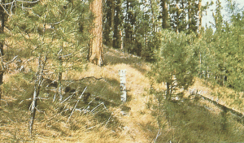
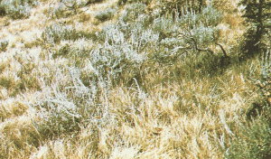

|
|
Fire Behavior Fuel Model 2 -- Timber Grass and Understory |
Anderson (1982) classifies Fire Behavior Fuel Model 2 in the Grass Group and describes it as follows:
Fire spread is primarily through the fine herbaceous fuels, either curing or dead. These are the surface fires where the herbaceous material, in addition to litter and dead-down stemwood from the open shrub or timber overstory, contribute to the fire intensity. Open shrub lands and pine stands or scrub oak stands that cover one-third to two-thirds of the area may generally fit this model; such stands may include clumps of fuels that generate higher intensities and that may produce firebrands. Some pinyon-juniper may be in this model.
Anderson's (1982) photographs 4 and 5 are examples of fuels fitting this model.
|  | Anderson (1982) Photo 4, Fire Behavior Fuel Model 2. Open ponderosa pine stand with annual grass understory. |
|  | Anderson (1982) Photo 5, Fire Behavior Fuel Model 2. Scattered sage within grasslands on the Payette National Forest, Idaho, USA. |